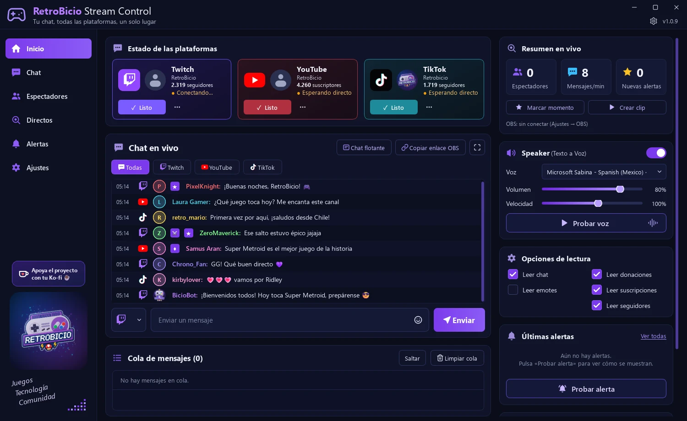
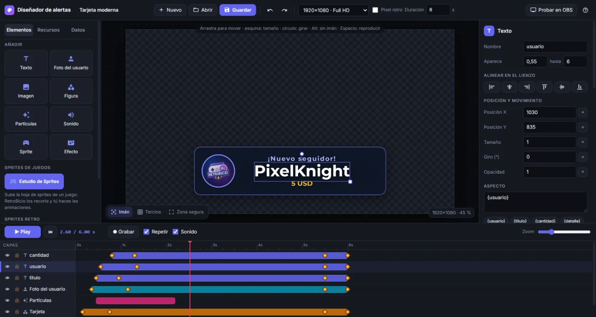
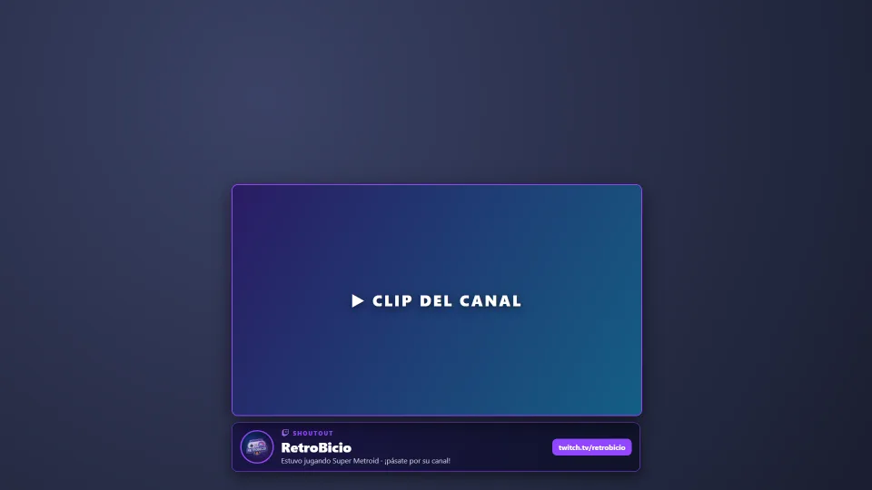
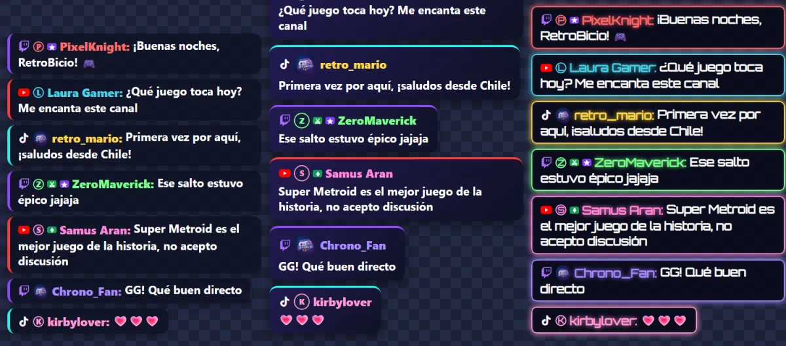
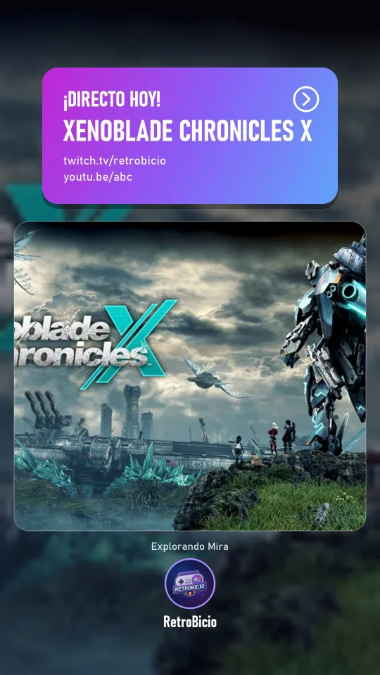

Chat de Twitch, YouTube y TikTok en una ventana, lectura por voz, alertas que diseñas tú, overlays para OBS y un copresentador con inteligencia artificial. Sin crear cuentas ni pegar claves.

Funciona con
Deja de tener diez programas abiertos. RetroBicio reúne tu chat, tus alertas, tus overlays y tu comunidad.
Twitch, YouTube y TikTok juntos, con fotos, insignias y emotes. Responde a todos desde un solo sitio.
Tu chat en voz alta, con voces de Windows o de personajes. Tus espectadores eligen voz con un comando.
BicioBot habla contigo, ve tu juego, saluda, comenta las alertas y al final te deja un informe del directo.
Seguidores, suscripciones, bits, Super Chats, miembros, regalos de TikTok, raids y Ko-fi, con sonido y animación.
Crea las tuyas con plantillas, línea de tiempo, iconos, fuentes y sonidos. Sin programar nada.
Escribe !so @canal y aparece su mejor clip en OBS, con mención en el chat y aviso por voz.
Chat en pantalla, alertas, actividad, predicciones, ruleta y créditos: un enlace y listo.
Puntos por ver el directo en las tres plataformas, tienda con canjes de audio y vídeo, predicciones y ruleta.
Guarda los mejores momentos y conviértelos en vídeos verticales con subtítulos para TikTok, Reels y Shorts.
Al empezar el directo avisa en Discord, X e Instagram, con una imagen hecha con el arte de tu juego.
Todo lo que pasa en tu directo en un panel para OBS: repite, pausa o silencia alertas con un clic.
Copias de seguridad automáticas, actualizaciones sin perder tu configuración y claves guardadas en Windows.
Arrastra, anima y listo. Lo que ves en el diseñador es exactamente lo que sale en OBS.

Escribe !so @canal y RetroBicio busca su mejor clip, lo muestra en OBS, lo menciona en el chat y lo anuncia por voz. Si te hacen un raid, lo hace solo.

Pega un enlace en OBS y personalízalo: los cambios se ven al momento.

BicioBot charla con tu comunidad, comenta lo que pasa en tu juego, agradece cada alerta con su propia voz y al terminar te deja un informe con ideas para crecer.
Cuando empiezas a transmitir, RetroBicio publica el aviso en Discord, X e Instagram con tus enlaces.

Sin registrarte en ningún sitio ni pegar claves raras: un asistente te acompaña.
Descomprime el .zip y abre RetroBicio.exe. No hace falta instalar nada.
El asistente te guía para conectar Twitch, YouTube y TikTok con sus páginas oficiales.
Copia los enlaces del chat y las alertas en fuentes «Navegador», y a transmitir.
Gratis para Windows 10 y 11. Se actualiza solo y nunca pierde tu configuración.
Descargar RetroBicio (.zip)Si Windows muestra «Windows protegió tu PC», pulsa Más información → Ejecutar de todas formas.
Es gratis y lo seguirá siendo. Si quieres apoyar el proyecto, invítame a un café.
Sí. RetroBicio es gratuito y sin publicidad. Las voces, la IA y BicioBot funcionan con el servidor de RetroBicio sin que tengas que registrar nada.
Sí. El chat, las alertas, los shoutouts, la ruleta y los créditos son enlaces que se añaden como fuente «Navegador».
No. RetroBicio es ligero; lo más pesado (voces e IA) se hace en internet.
No. Las actualizaciones reemplazan solo el programa. Además, se hacen copias de seguridad automáticas cada día.
Cuando conectas YouTube, la aplicación te pide iniciar sesión con Google en tu navegador. Con tu autorización, RetroBicio Stream Control consulta el nombre, la foto y el número de suscriptores de tu canal, lee el chat de tu directo, sus Super Chats y miembros, y envía al chat los mensajes que tú escribes o que BicioBot publica en tu nombre. RetroBicio nunca ve tu contraseña de Google.
Más detalles en la Política de Privacidad y las Condiciones del Servicio.